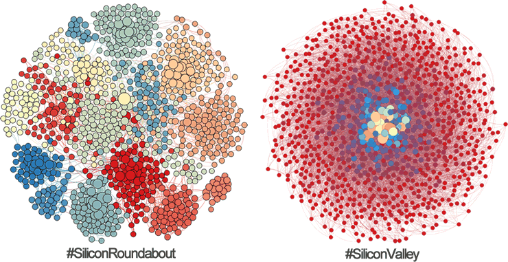
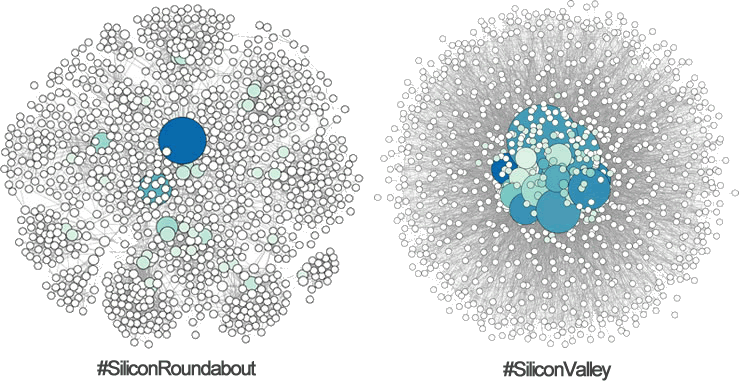

A 2013 report by Deloitte noted that London's technology, media, and telecoms (TMT) sector's contribution accounts for 8% of UK GDP, or $192 billion per year. Another article notes that Silicon Valley and San Fransisco's contribution to California's GDP was between 10% and 15%. Taking a relatively neutral figure of 12.5% it's calculated that the absolute figure for Silicon Valley's contribution is approximately $250 billion per year.
On the face of it, the GDP generated from TMT in London is ~30% lower than that of Silicon Valley, and obviously even lower with respect to California state as a whole. Moreover, the number of technology patents in London were 60% lower than in the Greater Silicon Valley area in 2013, and again even lower with respect to California as a whole. Although London is indeed not a trivial force with respect to equating, or even surpassing, Silicon Valley's dominance, however it still has a long way to go when looking at the baseline economic indicators only.
Unanswered questions
As positive and exciting as the Huff article reads regarding the future of London, I began to grow sceptical of the potential dominance of London in surpassing Silicon Valley (or even Route 128's Technology Corridor for that matter). In fact, while reading the article I thought that I had heard the same type of story before with regards to my neighbour capital Dublin. Specifically, there were a number of niggling questions at the back of my mind...
 |
How many jobs in Silicon Roundabout are with transnational's that originate in other countries (including Silicon Valley)? And, therefore, how dependent is the functionality of London on the success of other regions and economies?
An article last year by Wired UK noted that the big movers in London were in fact American tech companies: Google, Amazon, Salesforce, Microsoft, Facebook, Twitter, IBM, and even Yelp. Moreover, it is unlikely to see many tech firms that originated in London to be operating in Silicon Valley.
|
|
How many of these jobs are truly entrepreneurial, i.e., developing products and services (hardware and software) that are significantly original; that are combining other technologies and solutions to solve new problems, and therefore how many of these jobs are non-entrepreneurial?
|
|
Is it really much of an achievement to have more people employed in technology in London noting that London has a population 10x larger than San Fransisco?
|
|
What does the social structure of London look like and will this help us figure out how connected, and therefore cohesive, the industry is?
|
The first three questions can be debated and investigated in future discussions, here the social connectivity of London's tech scene versus the connectivity of Silicon Valley's is investigated. Before divulging I highlight that this is a work--in--progress and that the data provided here is a subset of the data that could (and should) be harvested!
Comparing social structures: the Roundabout and the Valley
Two social networks of individuals are gathered. Each individual in each network is either involved with tech in London or with tech in Silicon Valley. An example of a social network is seen in Fig 1 and consists of a set of nodes (individuals) and a set of links (friendships, followings, work relationships). The network in Fig 1 is an example of a small-world network where there exists a short distance between any two nodes and there exists overlapping communities.
Each network contains around 1,000 nodes and around 50,000 relationships. This population size was chosen specifically because my Macbook literally blew up when visualising 2,000 nodes (I'm working on this)! The network is derived from Twitter accounts where only relationships in which followings are reciprocated are considered. The reason we used reciprocated relationships is because there is a greater potential for the individuals to actually know each other, and are able to disseminate information, ideas, and therefore influence each other in some way. Relationships are scraped using a Python script and Twitters API, and with respect to the geolocation of each user, i.e., only users that announce that they live in London/Silicon Valley will be considered, and furthermore only Twitter users that announce that they are in tech (in some way) are considered... it is a long process to sort the data effectively hence the incomplete dataset!
The networks are shown in Fig 2 below and are generated with the open source visualisation software Gephi. The analysis of the networks are split into a 'macroscopic' analysis and a 'microscopic' analysis. The macroscopic analysis investigates the topology of the network in terms of the composition of the links, then derived features such as the density of each network, the diameter of each network, and the modularity (or clustering) of each network. The microscopic analysis takes into consideration the centralities of each node in both networks.
|

| |
Fig 2 : A comparison between the social structure of technologists in London (left) and Silicon Valley (right) using reciprocated Twitter followings as a proxy. Communities are coloured and nodes are sized by their relative degree. |
|
|
|
Macroscopic Analysis
Degrees. The size of each node represents its degree (the number of its links) and the colour of each node refers to its modularity class, i.e, what community the node is a member of. Besides the colours, the topologies of the networks are remarkably different. In terms of each networks degree distributions, both networks loosely follow a typical power law whereby there exists a small number of individuals that have a disproportionately large number of links in the network and there exists a large number of individuals that have a relatively small number of links in the network, similar to an Albert-Barabasi graph. This is to say that both network contain nodes that act as "hubs".
Network Density and Diameter. On average nodes have a larger number of links (reciprocated followings) in Silicon Valley as compared to Silicon Roundabout; in fact on average nodes have 35% more connections in SV than SR. This contributes to each networks density. The social network of Silicon Valley is more dense than that of London: the density of Silicon Valley is 2% whereas the density of Silicon Roundabout is 0.9%.
The diameter of a network corresponds to the longest shortest path between any two nodes in the network. For example, a network with a diameter of 1 means that all nodes are connected to each other, and a network with a longer diameter means that there must exist more intermediaries between at least two nodes. The density of a network is inversely related to the network diameter.
In London there exists a network diameter of 9 compared to Silicon Valley's diameter of 4. This implies that the diffusion of information and ideas from any one node to any other takes more layers of intermediation in London than Silicon Valley. Due to this intermediation, good ideas may die out or may simply not reach the people needed to operationalise it.
Modularity. The colours of the nodes in the networks correspond to the modules that each node is a part of. Simply from analysing the colours of the graphs, the network in London has a more modular structure meaning that relatively small clusters of nodes are well-connected with each other (dense), however the network as a whole is relatively sparse, hence the small overall network density. The modularity score is ~0.743 in London using Newman's modularity metric.
The network in Silicon Valley is less modular in that there exists a very distinctive core-periphery structure that is not evident from London's network. In simple terms, there is evidence of a greater number of so-called 'super-connectors': individuals with a disproportionately high degree (number of links) in the network that liaise between modules and between otherwise disconnected individuals.
Both networks contain individuals that could be considered as hubs: nodes that have disproportionately more links than all other nodes in the network. However, the connectivity of the hubs are different in different networks. Specifically, in Silicon Roundabout hubs tend to be within a given component, or cluster, as opposed to between components and therefore the network as a whole. From the neuroscience literature, the type of hubs that exist in Silicon Roundabout are termed as 'provincial hubs'. Conversely, in Silicon Valley hubs exist but they span many individuals across multiple components and therefore reduce the overall modularity that exists in the network. The hubs that exist in Silicon Valley are typically termed as 'connector hubs' since their relationships span otherwise disconnected communities and are equivalent to the super-connectors.
An important question to ask is: how and why does this modularity differential arise? It's difficult to answer this question with the data at the minute. However, I could hazard a guess and suggest a number of potential reasons.
First is population the of London and the lack of uniting institutions. As the population of communities grow they naturally become more sparse, and this is further exacerbated if there is a lack of social/economic institutions (or 'foci') that brings the community together. Coffee houses and Universities were renowned for providing this function in Silicon Valley: problems were addressed and ideas were discussed and disseminated.
Second, although there exists a growing level of entrepreneurship in London, much of London's tech scene is based on already established firms and institutions developing new operations, or forming new operations in London as opposed to simply a product of well-connected entrepreneurs. Indeed, a denser and smaller-world network may signal a product of, and a basis for, entrepreneurial activity. The establishment of firms, combined with a lack of institutions developed to provide a platform for cooperation, may lead to a more insular social structure in which individuals form and strengthen connections inward as opposed to with individuals across different firms and industries.
It may be that the modularity and overall topology that we see in London is a sign of a relatively juvenile tech area, at that it will evolve to become more like Silicon Valley, especially with the formation of institutions specifically targeted to bring together technologists and potential entrepreneurs.
Microscopic Analysis
Betweenness Centrality. The modularity of the network is further highlighted by the betweenness centrality of each node. The betweenness centrality refers to the number of shortest paths from all nodes to all others that pass through that node. Fig 3 below highlights the betweenness centrality of each node. Here, larger nodes are nodes that have a higher betweenness centrality (all centralities are relative) and nodes that have a relatively higher degree are more blue.
|

| |
Fig 3 : A comparison between the social structure of technologists in London (left) and Silicon Valley (right) using with respect to betweenness centralities. |
|
|
Obviously there is a direct correlation between nodes that have a high degree and nodes that have a high betweenness centrality. More specifically, nodes that are connector hubs will have a higher betweenness centrality than nodes that may have a higher degree, but are more provincial.
In London there exist less nodes that are connector hubs and therefore have a high betweenness centrality in the network relative to Silicon Valley. In fact, hubs in Silicon Valley seem to form a so-called 'rich club', i.e, connector hubs that are tightly connected to each other.
Concluding comments
The social structure of both London and Silicon Valley remain dissimilar. Specifically, by looking at the structure alone, London seems to be more disconnected, less cohesive, and more modular than the social structure of Silicon Valley. This lack of cohesion may be because of relative lack of entrepreneurship, a relative lack of social and economic foci, and/or the relative youth of the London tech scene. Further still, London's structure may not be conducive to further entrepreneurship without institutions that specifically connect the division of labour.
The analysis has it's drawbacks which need to be resolved over time. First, we only look at Twitter the data could be complimented from LinkedIn. Moreover, we need a bigger dataset... we realistically can't say much with only 1000 nodes from each industry! Second, more of an institutional analysis needs to be made. What are the institutions that bring individuals together? Third, the analysis could benefit from more measures... but c'mon it's been a long few days!
More to come soon! |
|